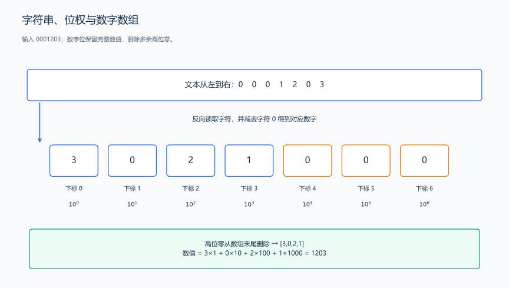
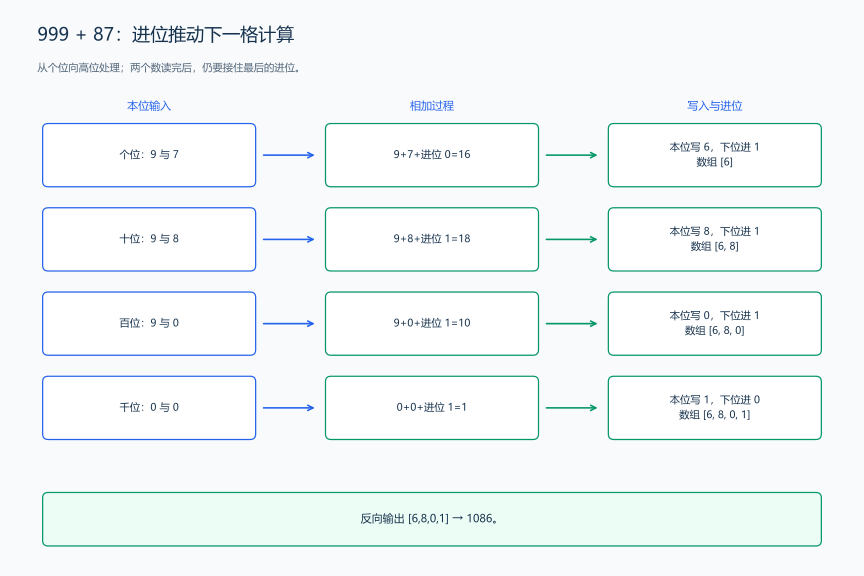
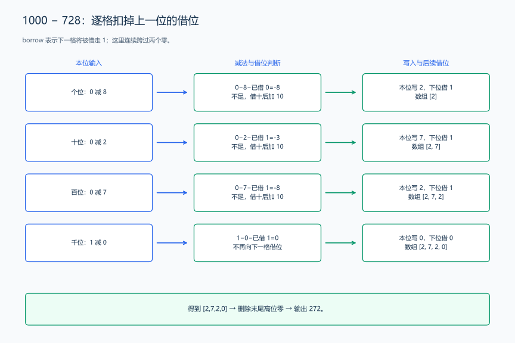
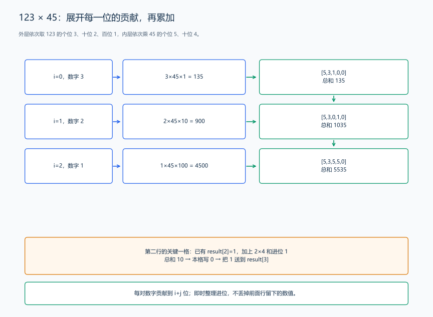
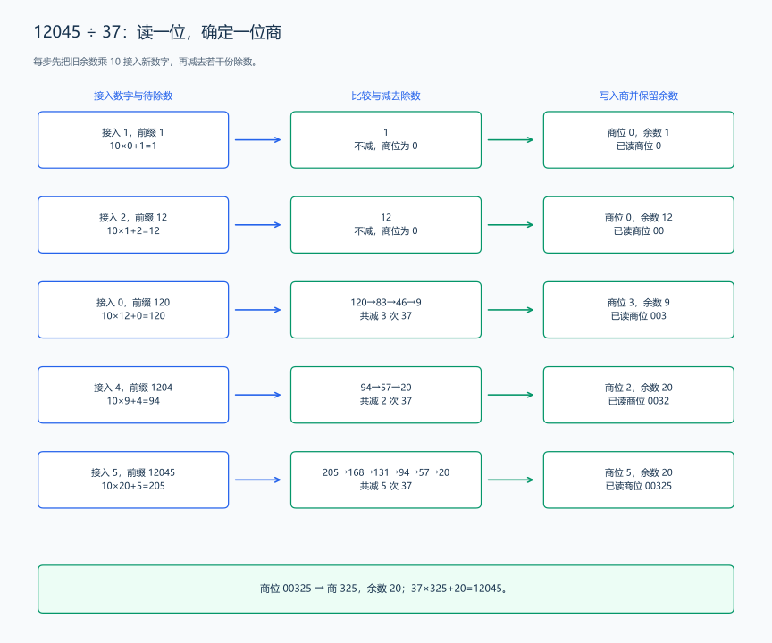
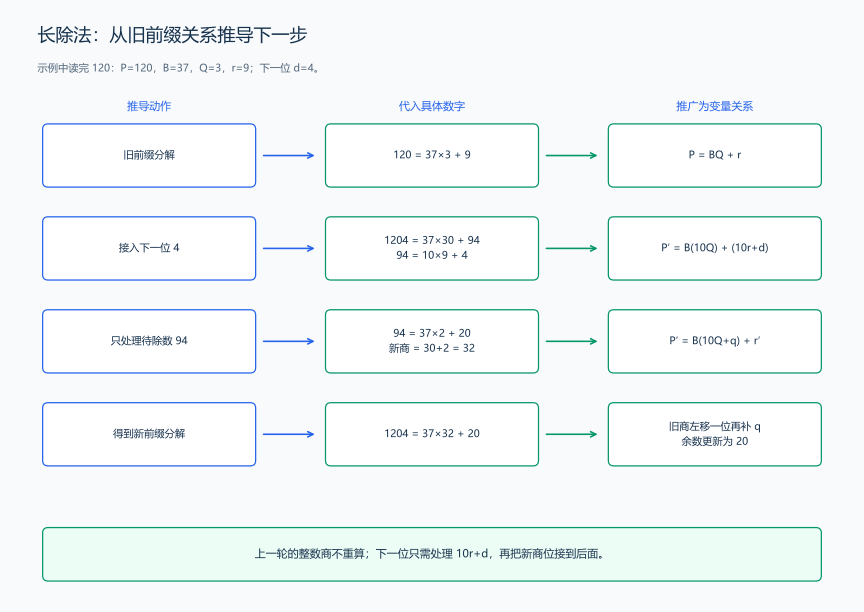
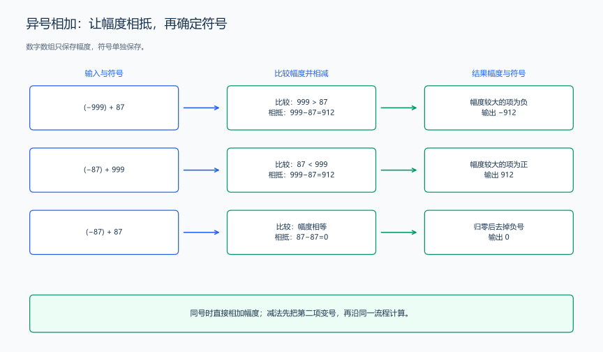

（二） 大整数的加减乘除
缓冲输入解决“一次读很多数”的问题，数本身有几百位时，还需要改变保存和计算的方式。例如 99999999999999999999+1，答案是 100000000000000000000；每一位都要保留下来。把输入读成 string，再用已学的数组、循环和函数模拟竖式，就能逐步构建高精度整数运算。
这里先让四种运算处理数的绝对值，再单独处理正负号。这样，加法的进位、减法的借位和除法的余数都能分别看清楚。
1. 完整示例：大整数四则计算器
题目原文（自拟）： 第一行输入操作次数 T，接下来 T 行，每行输入一个运算符 op 和两个十进制整数 A、B。op 是 +、-、*、/ 之一。\(1\le T\le20\)；A、B 的数字部分各有 1 到 2000 位，可以带一个正号或负号，也可以包含前导零。
加、减、乘操作分别输出和、差、积。除法输出整数商与余数，用一个空格分隔；商向零截断，余数随被除数的符号。例如 -17/5 输出 -3 -2，因为 \(-17=(-3)\times5+(-2)\)。B 为零时，除法输出 DIV0。每个操作的结果占一行，数字按通常的十进制形式输出。
样例输入：
8
+ 999 87
- 1000 728
* 123 45
/ 12045 37
- 728 1000
+ -999 87
/ -17 5
/ 0012 -000样例输出：
1086
272
5535
325 20
-272
-912
-3 -2
DIV0分析路线： 先保存数字位；加减从个位向高位处理；乘法展开每一对位的贡献；除法从最高位向低位读入前缀，逐步得到商和余数；最后用绝对值大小和符号决定调用哪种运算。
各段代码按本节顺序放进同一个源文件，最后接上计算器的 main。下面不会把几种运算塞进一个长代码块，而是逐段构建它们。
2. 数字位的存储、比较与输出
把 1203 存成 [3,0,2,1]：a[0] 是个位，a[1] 是十位，a[2] 是百位。每个位置保存一个 0 到 9 的数字，数值为
\[ A=a[0]+10a[1]+100a[2]+\cdots=\sum_{i=0}^{n-1}a[i]10^i. \]
加法产生的进位总是去下一格，减法也是从这一格向下一格借位；让低位在前，便于从下标 0 开始循环。输出时再反向读取。数字 0001203 和 1203 表示同一个数，数组末尾多余的高位零会被删除；零统一保存成 [0]。

先放入头文件和下面的辅助函数。<string> 保存输入文本，<vector> 保存数字位，<algorithm> 提供 max，<utility> 提供 pair，<iostream> 负责本例的标准流输入输出。using Digits = vector<int> 是类型别名；与前面的 fread 示例各自组成一个程序。
#include <algorithm>
#include <iostream>
#include <string>
#include <utility>
#include <vector>
using namespace std;
using Digits = vector<int>; // 下标 i 保存十进制的 10^i 位。
void trim(Digits &a) {
while (a.size() > 1 && a.back() == 0) {
a.pop_back(); // 删除多余高位零，但给数字 0 留下一位。
}
}
Digits readDigits(const string &s) {
Digits a;
for (int i = static_cast<int>(s.size()) - 1; i >= 0; --i) {
a.push_back(s[i] - '0'); // 字符 '7' 转成数字 7，低位先存。
}
trim(a);
return a;
}
string writeDigits(const Digits &a) {
string s;
for (int i = static_cast<int>(a.size()) - 1; i >= 0; --i) {
s.push_back(static_cast<char>('0' + a[i])); // 高位先输出。
}
return s;
}
int compare(const Digits &a, const Digits &b) {
if (a.size() != b.size()) {
return a.size() > b.size() ? 1 : -1; // 位数多的绝对值大。
}
for (int i = static_cast<int>(a.size()) - 1; i >= 0; --i) {
if (a[i] != b[i]) {
return a[i] > b[i] ? 1 : -1; // 第一处不同的高位决定大小。
}
}
return 0; // 每一位都相同。
}比较过程： 1000 有四位，728 有三位，所以前者更大；1203 与 1290 都有四位，千位、百位相同，十位的 0 小于 9，因此前者更小。不能从个位开始比较大小，1203 的个位虽较大，整个数仍较小。
读入、输出和同位数比较都最多检查每一位一次，时间为 \(O(n)\)。读入得到 n 个数字位，存储为 \(O(n)\)。
3. 加法：逐位相加与进位
先手算 999+87。个位相加得到 16，个位留下 6，把一个十送到十位；十位再把这个进位一起加上。
| 当前位 | A 的数字 | B 的数字 | 进入本位的进位 | 本位总和 s | 写入的数字 s%10 |
送到下一位的进位 s/10 |
|---|---|---|---|---|---|---|
| 个位 | 9 | 7 | 0 | 16 | 6 | 1 |
| 十位 | 9 | 8 | 1 | 18 | 8 | 1 |
| 百位 | 9 | 0 | 1 | 10 | 0 | 1 |
| 千位 | 0 | 0 | 1 | 1 | 1 | 0 |

数组按顺序得到 [6,8,0,1]，反向输出为 1086。较短的数没有百位时，这一位按 0 参与相加；两个数都处理完后，千位仍收到一个进位，所以还要再走一次循环。
把每行手算换成变量：本位总和为 \(s=a_i+b_i+c\)。十进制分解 \(s=10\lfloor s/10\rfloor+(s\bmod10)\)，因此留下余数，传递商。
Digits addMagnitude(const Digits &a, const Digits &b) {
Digits result;
int n = static_cast<int>(max(a.size(), b.size()));
int carry = 0;
for (int i = 0; i < n || carry != 0; ++i) {
int sum = carry;
if (i < static_cast<int>(a.size())) sum += a[i];
if (i < static_cast<int>(b.size())) sum += b[i];
result.push_back(sum % 10); // 当前位留下个位部分。
carry = sum / 10; // 十位部分成为下一格的进位。
}
return result;
}代码解释： carry 在一次循环开始时来自上一位，在循环结束时改为送给下一位的值。每格最多是 9+9+1=19，进位最多为 1；再长的输入也没有把整个大整数塞进 int。时间为 \(O(\max(n,m))\)，结果空间为 \(O(\max(n,m))\)，n、m 分别是两个数的位数。
练习： 洛谷 P1601 — 高精度加法。
4. 减法：绝对值比较与逐位借位
先计算 1000-728。个位 0-8 不够减，就从下一位借一个十，得到 2；下一位除了减去 B 的数字，还要扣掉刚才借走的 1。
| 当前位 | A 的数字 | B 的数字 | 上一位借走的 1 | 初步差 t | 本位写入 | 从下一位借的 1 |
|---|---|---|---|---|---|---|
| 个位 | 0 | 8 | 0 | -8 | 2 | 1 |
| 十位 | 0 | 2 | 1 | -3 | 7 | 1 |
| 百位 | 0 | 7 | 1 | -8 | 2 | 1 |
| 千位 | 1 | 0 | 1 | 0 | 0 | 0 |

得到 [2,7,2,0]，去掉最高位的 0，输出 272。写入数字时，初步差为负就加 10，并记录借位；下一格再扣掉这个借位。
Digits subtractMagnitude(const Digits &a, const Digits &b) {
Digits result;
int borrow = 0;
for (int i = 0; i < static_cast<int>(a.size()); ++i) {
int difference = a[i] - borrow;
if (i < static_cast<int>(b.size())) difference -= b[i];
borrow = difference < 0 ? 1 : 0;
if (borrow != 0) difference += 10; // 从下一格借来一个十。
result.push_back(difference);
}
trim(result); // 1000-728 的末尾零、相等两数相减的高位零都在这里整理。
return result;
}调用顺序： 1000-728 比较后直接减；728-1000 则计算 1000-728 的幅度，再给结果加负号，得到 -272。所以符号处理会先用 compare 比较，随后把较大的幅度放在第一个参数。相等时逐位得到 0，最后留下 [0]。
借位不是把下一格永久改成负数，而是用 borrow 保存“下一格要扣掉 1”。每步的差在 -10 到 9 之间，加 10 后就是一个数字位。时间为 \(O(\max(n,m))\)，结果空间同阶。
练习： 洛谷 P2142 — 高精度减法。
5. 乘法：位权展开与错位累加
计算 123×45 时，把 123 展开成 \(3+2\times10+1\times100\)：
\[ 123\times45=3\times45+2\times45\times10+1\times45\times100 =135+900+4500=5535. \]
每一行都在已有结果上继续累加。个位 3 的贡献从下标 0 开始，十位 2 的贡献从下标 1 开始，百位 1 的贡献从下标 2 开始。

再拆开一行：a[i] 表示 \(a_i10^i\)，b[j] 表示 \(b_j10^j\)，两者相乘贡献 \(a_i b_j10^{i+j}\)，所以要累加到 result[i+j]。但这格可能已有前一行留下的数字，也可能收到本行上一格的进位，必须三项一起算。
| 处理 A 的位 i | 处理 B 的位 j | 本格原值 | 位乘积 | 本行进位 | 总和 | 写入 / 新进位 |
|---|---|---|---|---|---|---|
| 0，数字 3 | 0，数字 5 | 0 | 15 | 0 | 15 | 5 / 1 |
| 0，数字 3 | 1，数字 4 | 0 | 12 | 1 | 13 | 3 / 1，行末写下标 2 为 1 |
| 1，数字 2 | 0，数字 5 | 3 | 10 | 0 | 13 | 3 / 1 |
| 1，数字 2 | 1，数字 4 | 1 | 8 | 1 | 10 | 0 / 1，行末写下标 3 为 1 |
| 2，数字 1 | 0，数字 5 | 0 | 5 | 0 | 5 | 5 / 0 |
| 2，数字 1 | 1，数字 4 | 1 | 4 | 0 | 5 | 5 / 0 |
Digits multiplyMagnitude(const Digits &a, const Digits &b) {
Digits result(a.size() + b.size(), 0);
for (int i = 0; i < static_cast<int>(a.size()); ++i) {
int carry = 0; // 每一行从自己的起点开始进位。
for (int j = 0; j < static_cast<int>(b.size()); ++j) {
int sum = result[i + j] + a[i] * b[j] + carry;
result[i + j] = sum % 10; // 边累加边整理为一个数字位。
carry = sum / 10;
}
result[i + b.size()] = carry; // 本行多出的最高位还没有被前面的行写入。
}
trim(result);
return result;
}代码解释： 外层选 A 的一位，内层让它乘 B 的每一位；i+j 实现竖式中的错位。算完一行，已经得到这一行与前面各行的总和，下一行在这个结果上继续加。
每步已存数字最多为 9，单个位乘积最多为 81，进位最多为 9，三项总和最多为 99。及时整理每个数字位，让中间值始终很小。若先把所有位乘积堆在一个位置、最后才进位，就要另外分析那个累计值的大小。
两个数有 n、m 位时，共做 nm 次位乘法，时间为 \(O(nm)\)；结果最多 n+m 位，结果空间为 \(O(n+m)\)。2000 位乘 2000 位约做 4000000 次位乘法。
6. 除法：逐位确定商和余数
加、减、乘从低位开始，是因为低位产生的进位和借位要传给高位。除法要先决定高位商，因此从被除数最高位开始。手算 12045÷37，不是一次求出整个商，而是把数字 1、2、0、4、5 依次接到当前余数后面。
6.1 从具体前缀推导下一位商
开始时，已处理前缀为 0，商为 0，余数为 0。读入数字 d 后，把原来的余数 r 扩大十倍，再接上 d，得到 \(u=10r+d\)。
| 读入数字 d | 上一步余数 r | 本步待除数 u=10*r+d |
逐次减去 37 | 本位商 | 新余数 |
|---|---|---|---|---|---|
| 1 | 0 | 1 | 1 小于 37，不减 | 0 | 1 |
| 2 | 1 | 12 | 12 小于 37，不减 | 0 | 12 |
| 0 | 12 | 120 | 120→83→46→9 |
3 | 9 |
| 4 | 9 | 94 | 94→57→20 |
2 | 20 |
| 5 | 20 | 205 | 205→168→131→94→57→20 |
5 | 20 |

读出的商位依次为 0、0、3、2、5，整理成 325，余数为 20。可以反算 \(37\times325+20=12045\)。
为什么旧商不用重新计算？设已读前缀 P 的关系为 \(P=BQ+r\)，接下一位 d 后：
\[ P'=10P+d=B(10Q)+(10r+d). \]
再把 \(10r+d\) 分成 \(Bq+r'\)，得到
\[ P'=B(10Q+q)+r'. \]
因此原来的商 Q 扩大十倍，再补一个数字 q；新余数只需由 10*r+d 继续计算。这就是长除法每次只处理余数的原因。

每步减到不足一个 B 就停止，所以旧余数满足 \(0\le r<B\)；接入一个 0 到 9 的数字后，\(0\le10r+d<10B\)。因此最多减 9 次，本位商就在 0 到 9 之间。不是把整个被除数反复减到零，而是每读一位只确定一位商。
6.2 大整数除以大整数的构建
商的数组也按低位在前存储。处理被除数的下标 i 时，得到的商位就写在 quotient[i]；最高位不足相除会写 0，末尾统一整理。
余数数组 [9] 接上数字 4 后应表示 94，即 [4,9]。remainder.insert(remainder.begin(),a[i]) 把新数字放在最低位，让原来的数字向高位移动一格，正好完成乘 10 再加新数字。余数为 [0] 时接入 1 得到 [1,0]，trim 会整理成 [1]。
pair<Digits, Digits> divideMagnitude(const Digits &a, const Digits &b) {
Digits quotient(a.size(), 0);
Digits remainder{0};
for (int i = static_cast<int>(a.size()) - 1; i >= 0; --i) {
remainder.insert(remainder.begin(), a[i]); // 余数乘 10，再接入下一位。
trim(remainder);
int digit = 0;
while (compare(remainder, b) >= 0) {
remainder = subtractMagnitude(remainder, b);
++digit; // 每减去一次除数，本位商加一。
}
quotient[i] = digit; // 该商位对应被除数当前的十进制位权。
}
trim(quotient);
return {quotient, remainder}; // 同一次长除法同时得到商和余数。
}代码解释： 每次循环结束，都保存“已读前缀＝除数×已得商＋当前余数”。下一轮只把余数接入一位，再继续减；前面已经决定的高位商不受影响。
5÷12 的第一位不减，商为 0，余数为 5；1005÷5 的商位依次为 0、2、0、1，整理成 201。其中中间的 0 必须保留：已经得到商 2 后，下一位待除数是 0，本位商就要写 0，不能把 201 压成 21。
n 是被除数位数，m 是除数位数。每步接位、比较和减法处理至多 m+1 位的余数，本位最多做 9 次减法；因此时间为 \(O(nm)\)，商和余数空间合计为 \(O(n+m)\)。如果 n 小于 m，余数也只会增长到 n 位，实际工作更少。
这个实现重在直接表现长除法。需要计算几十万位的乘除时，nm 次逐位工作会迅速增多；此时再学习更大的进制、快速乘法及相应除法，先把本节的每一步算清楚。
练习： 洛谷 P1932 — A+B A-B A*B A/B A%B Problem（综合练习；20000 位数据要结合工作量继续优化）。
6.3 大整数除以普通整数的简化
若除数是 37 这样的普通整数，余数也能直接放进普通整数，不必调用数字数组的比较和减法。此时直接算出 current/b 和 current%b。
例如被除数有 5000 位，除数为 \(10^9\)：旧余数最多为 999999999，接一位后最多为 9999999999，用 long long 可以保存；商的每一位仍在 0 到 9 之间。
下面的函数是另一种独立的除法实现，复用 Digits 与 trim。它返回商数组和 long long 余数；前面的计算器采用完整的 divideMagnitude，不需要把这个函数接入 main。
pair<Digits, long long> divideByInt(const Digits &a, int b) {
Digits quotient(a.size(), 0);
long long remainder = 0;
for (int i = static_cast<int>(a.size()) - 1; i >= 0; --i) {
long long current = remainder * 10 + a[i];
quotient[i] = static_cast<int>(current / b); // 直接确定本位商。
remainder = current % b; // 留给下一位的余数。
}
trim(quotient);
return {quotient, remainder};
}每一位只做一次普通整数除法和取余，时间为 \(O(n)\)；商数组占 \(O(n)\)，另有一个余数变量。练习： 洛谷 P1480 — A/B Problem（高精度除法Ⅰ），题面的除数为 1 到 \(10^9\)，可以用这一版逐位除法。
7. 把正负号接到四则运算
数组保存幅度，再增加 bool negative 保存是否带负号。-000 的幅度整理成 [0]，随后去掉负号；输出得到 0，不是 -0。
struct BigInteger {
Digits digits;
bool negative = false; // true 表示负数，digits 只保存绝对值。
};
bool isZero(const Digits &a) {
return a.size() == 1 && a[0] == 0;
}
BigInteger makeInteger(Digits digits, bool negative) {
if (isZero(digits)) negative = false; // 所有运算得到的零都去掉负号。
return {digits, negative};
}
BigInteger readInteger(const string &s) {
bool negative = s[0] == '-';
int firstDigit = (s[0] == '-' || s[0] == '+') ? 1 : 0;
return makeInteger(readDigits(s.substr(firstDigit)), negative);
}
string writeInteger(const BigInteger &a) {
return (a.negative ? "-" : "") + writeDigits(a.digits);
}s.substr(firstDigit) 取数字部分，跳过开头的符号；makeInteger 把幅度和符号合成一个结果，同时统一零的写法。
7.1 同号相加与异号相抵
(-999)+(-87) 的两份幅度相加，结果带负号，得到 -1086；(-999)+87 则让两份幅度抵消，计算 999-87=912，符号来自幅度更大的 -999，得到 -912。
| 输入 | 幅度计算 | 结果符号 | 结果 |
|---|---|---|---|
999+87 |
999+87 |
正 | 1086 |
(-999)+(-87) |
999+87 |
负 | -1086 |
(-999)+87 |
999-87 |
跟随幅度 999 | -912 |
(-87)+999 |
999-87 |
跟随幅度 999 | 912 |
(-87)+87 |
87-87 |
归零后去掉负号 | 0 |

BigInteger addInteger(const BigInteger &a, const BigInteger &b) {
if (a.negative == b.negative) {
return makeInteger(addMagnitude(a.digits, b.digits), a.negative);
}
int order = compare(a.digits, b.digits);
if (order >= 0) {
// 异号相抵，幅度较大的 a 决定结果符号。
return makeInteger(subtractMagnitude(a.digits, b.digits), a.negative);
}
return makeInteger(subtractMagnitude(b.digits, a.digits), b.negative);
}
BigInteger subtractInteger(const BigInteger &a, BigInteger b) {
if (!isZero(b.digits)) b.negative = !b.negative;
return addInteger(a, b); // A-B 等于 A+(-B)，复用已推导的加法。
}减法解释： 728-1000 变成 728+(-1000)，幅度 1000 较大，计算 272 并取负号；728-(-1000) 变成 728+1000，两份正幅度相加，得到 1728。
7.2 乘除符号与整数余数
乘法和除法的商，同号为正、异号为负。因此用 a.negative != b.negative 判断结果是否为负。除法先对两份幅度求商和余数，再为商设置乘除符号，为余数设置被除数符号。
| A 与 B | 幅度除法 | 带符号商 / 余数 | 反算 |
|---|---|---|---|
| 17 与 5 | 商 3，余 2 | 3 / 2 |
\(17=5\times3+2\) |
| -17 与 5 | 商 3，余 2 | -3 / -2 |
\(-17=5\times(-3)+(-2)\) |
| 17 与 -5 | 商 3，余 2 | -3 / 2 |
\(17=(-5)\times(-3)+2\) |
| -17 与 -5 | 商 3，余 2 | 3 / -2 |
\(-17=(-5)\times3+(-2)\) |
BigInteger multiplyInteger(const BigInteger &a, const BigInteger &b) {
return makeInteger(multiplyMagnitude(a.digits, b.digits),
a.negative != b.negative); // 异号相乘得到负数。
}
pair<BigInteger, BigInteger> divideInteger(const BigInteger &a,
const BigInteger &b) {
auto [quotient, remainder] = divideMagnitude(a.digits, b.digits);
return {makeInteger(quotient, a.negative != b.negative),
makeInteger(remainder, a.negative)}; // 余数随被除数符号，零由统一函数整理。
}这种除法得到整数商，不输出小数部分；符号处理与 C++ 整数 /、% 的向零截断结果一致。(-2)/5 的幅度商为 0，整理后输出 0 -2。
8. 组装计算器与核对结果
依次放入数字辅助函数、幅度加减乘除、BigInteger 与符号函数，最后加入下面的 main。每个函数都有一个职责：解析、计算幅度、处理符号或输出。独立的 divideByInt 可以另存为模板，也可以放在同一文件中。
int main() {
ios::sync_with_stdio(false);
cin.tie(nullptr);
int t;
cin >> t;
while (t--) {
char operation;
string first, second;
cin >> operation >> first >> second; // 超长整数先按文本读入。
BigInteger a = readInteger(first);
BigInteger b = readInteger(second);
if (operation == '+') {
cout << writeInteger(addInteger(a, b)) << '\n';
} else if (operation == '-') {
cout << writeInteger(subtractInteger(a, b)) << '\n';
} else if (operation == '*') {
cout << writeInteger(multiplyInteger(a, b)) << '\n';
} else if (isZero(b.digits)) {
cout << "DIV0\n"; // 除数 0 在进入长除法前单独输出。
} else {
auto [quotient, remainder] = divideInteger(a, b);
cout << writeInteger(quotient) << ' '
<< writeInteger(remainder) << '\n';
}
}
}样例逐项解释： 前四项对应进位、借位、位乘积累加和长除法的过程图；第五项先比较幅度再相减，得到负数；第六项两份幅度相抵后留下 912，结果带负号；第七项给幅度商 3 与余数 2 设置符号；第八项把 -000 整理为零，再输出 DIV0。
再用下面的输入检查前导零、相消、连续进位、连续借位和商中间的零：
6
+ 0000 -000
- -87 -87
+ 99999999999999999999 1
- 100000000000000000000 1
* -00012 +003
/ 1005 5输出为：
0
0
100000000000000000000
99999999999999999999
-36
201 0检查除法时，还可以把输出商 Q、余数 R 代回 \(A=BQ+R\)，再检查余数的幅度小于除数幅度。例如 12045=37×325+20，且 20 小于 37。只反算等式还不够：12045=37×324+57 也成立，但 57 还够再减一次 37，因此商 324 尚未算完。
9. 按数字位数估算复杂度与选用模板
这里的规模是数字位数，不是整数本身的数值。两份 2000 位整数，用 n、m 表示位数；n=2000，而不是令 n 等于输入的大整数。
| 操作 | 时间 | 结果与临时存储 | 工作量来源 |
|---|---|---|---|
| 解析、输出 | \(O(n)\) | \(O(n)\) | 每位字符处理一次 |
| 比较、加法、减法 | \(O(\max(n,m))\) | 比较 \(O(1)\)；加减 \(O(\max(n,m))\) | 一趟逐位扫描与进位、借位 |
| 大整数乘大整数 | \(O(nm)\) | \(O(n+m)\) | 两层循环，共 nm 个位乘积 |
| 大整数除以大整数 | \(O(nm)\) | \(O(n+m)\) | n 次接位，每位至多 9 次 m 位减法 |
| 大整数除以普通整数 | \(O(n)\) | 商 \(O(n)\)、余数 \(O(1)\) | 余数直接用普通整数计算 |
若两个整数都有 2000 位，乘法做约 400 万次位乘法；若都有 20000 位，则变成约 4 亿次。提高输入速度不会减少这些位运算，选择方法时仍要把位数代入估算。
数字数组的每个 int 通常占 4 字节，2000 位约用 8000 字节；两个输入和乘积的数字存储合计约 32000 字节，另有文本、vector 本身和计算时的临时对象。用 string 保存输入，不代表把 string 转成 long long 后再计算；正是逐位数组让全部数字都能参与运算。
接下来遇到阶乘、组合计数或递推结果越来越长时，可以复用高精度加乘；遇到除数较小的题目，则选逐位普通整数除法。对应练习分别见加、减、乘、除各节，综合练习可以先计算短数据核对四种结果，再逐步增加数字位数。